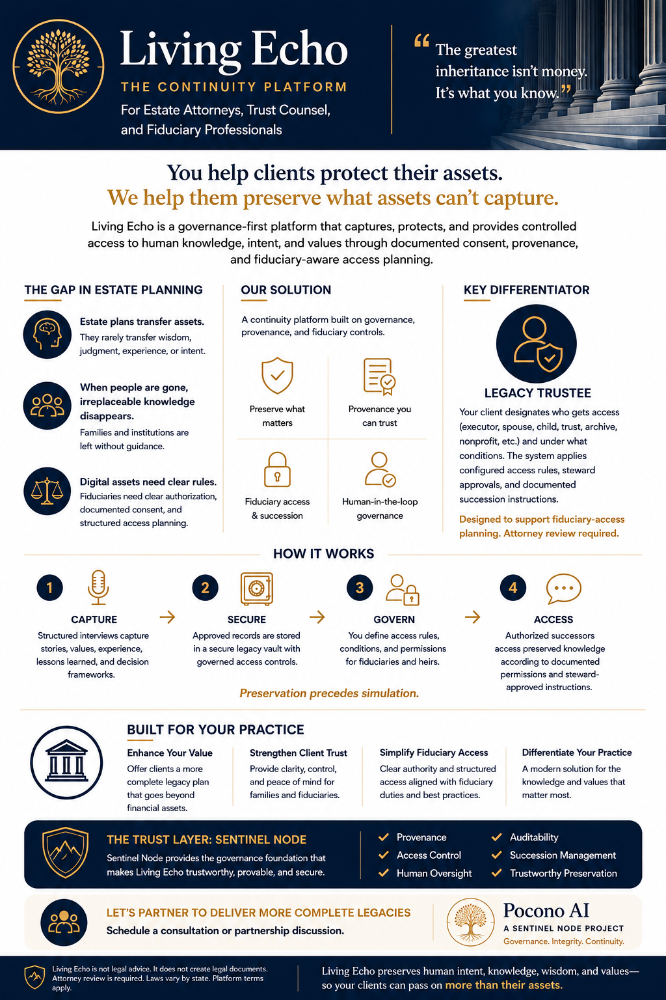

The Continuity Platform · For Estate Attorneys, Trust Counsel, and Fiduciary Professionals
Living Echo for Estate and Fiduciary Professionals
Estate plans transfer assets. Living Echo helps preserve the knowledge, intent, values, and human context that assets cannot capture.
Estate planning protects what a client owns. Living Echo helps preserve what a client knows: their judgment, stories, values, family guidance, leadership lessons, and documented intent.

The gap
Why Estate Professionals Should Care
Clients transfer wealth, but families often lose the wisdom, context, stories, and intent behind that wealth. Estate plans rarely transfer the judgment, experience, and guidance that gave that wealth meaning — and when that knowledge is gone, families and institutions are left without the context to use it well.
The addition
What Living Echo Adds
Living Echo provides structured legacy capture, governed archival storage, documented consent, provenance, controlled successor access, and steward-approved retrieval — a complement to the estate plan, not a replacement for it.
Applications
Professional Use Cases
Structured capture before incapacity or end of life.
Preservation of family guidance and values for the next generation.
Capturing institutional and leadership knowledge ahead of succession.
Preservation of service history and lived experience.
Documented, structured access planning for trustees and successors.
Pairing the estate plan with the human context behind it.
Guardrails
Fiduciary-Aware Guardrails
Living Echo should not claim to create legal documents or replace attorney judgment. It supports planning conversations through documented consent, structured access, provenance, and attorney-reviewed instructions.
See the Full Continuity Platform
The Living Echo continuity platform serves families, veterans, organizations, and the professionals who support them — all built on the same governance foundation.
Interested in this product track?
Join the Pocono AI interest list and tell us where you fit. The fastest way to route estate, fiduciary, advisor, and product-interest inquiries.
Join the Interest ListPlease do not submit private medical records, legal files, confidential client materials, or sensitive documents through this form.